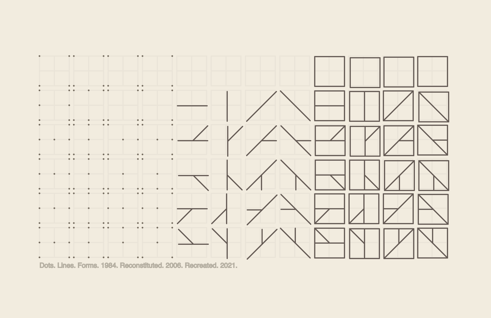
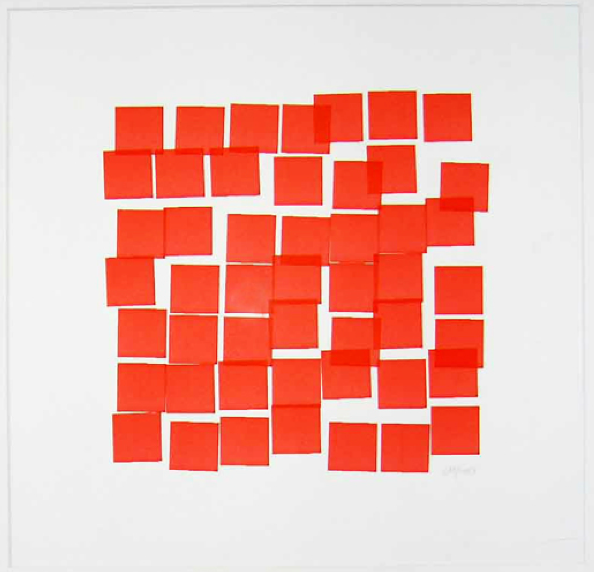
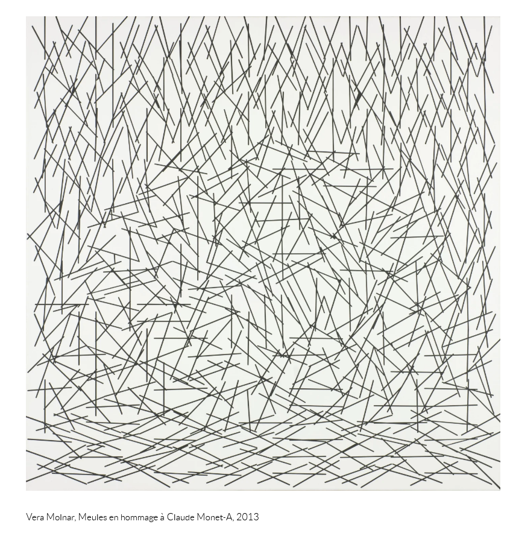
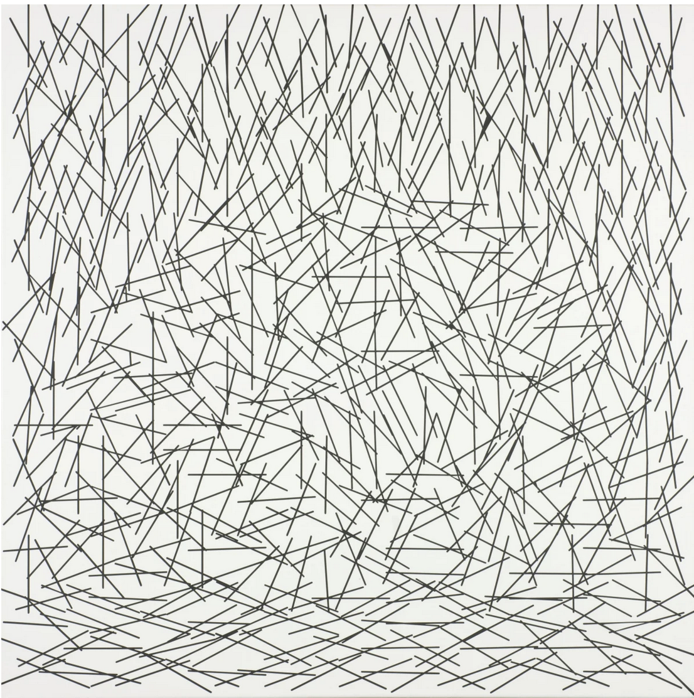
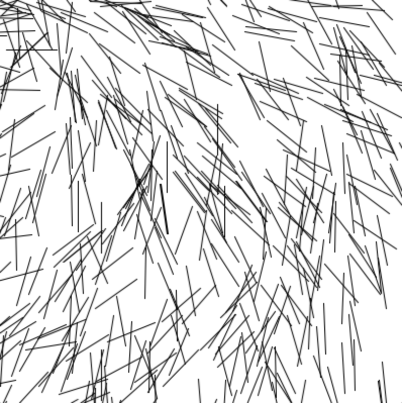
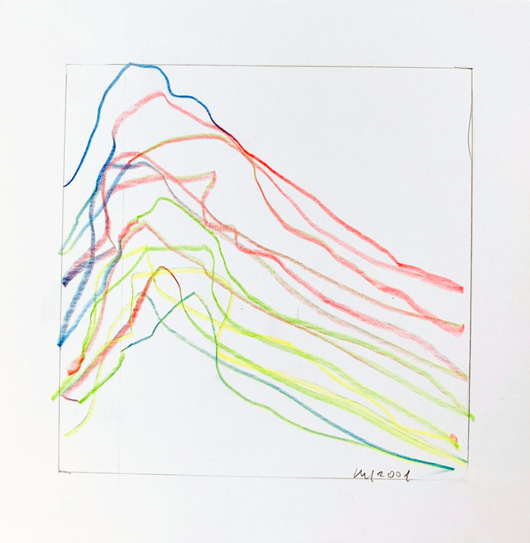
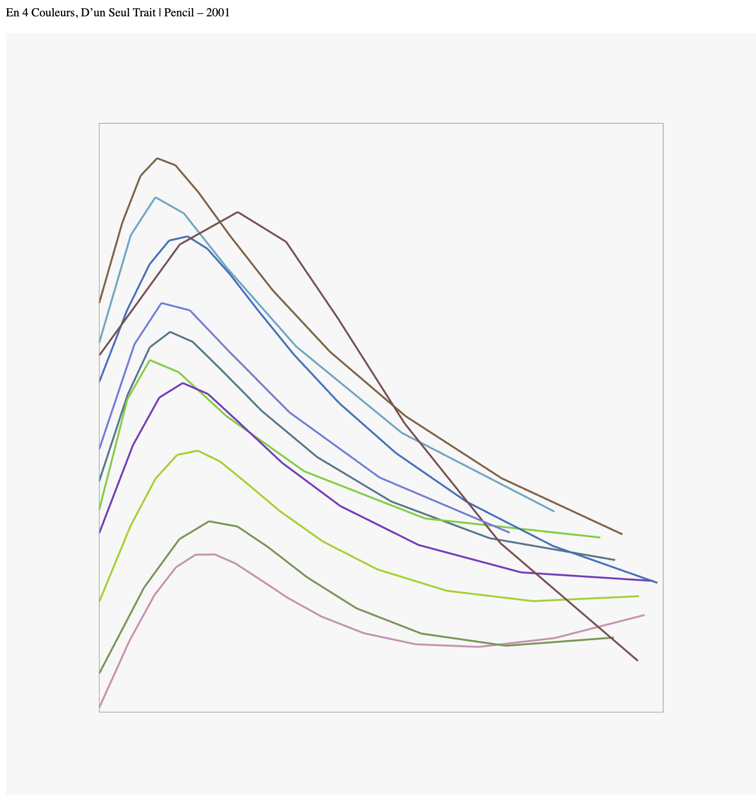

HW: Week 1
Shen-Shen W:
Original:

Recreation:

Dots, Lines, and Forms by Hassan Sharif 1984 - Recreation/Process - Code
Matthis G:
Original:

Recreation:

Vera Molnar: Structure a Partir de la Lettre U/C
Yadira S:

A mix of (Dés) Ordres & Hommage à Barbaud ? with colours - interactive output

Vera Molnar’s “Shall we take a walk?” materialized as e-textile with my own recreation of neural networks in pink and orange nodes interconnected to highs and lows in the “walk”.
Lillian-Yvonne:
Vera Molnar’s “Two Rectangles” (1949), “Inclinaisions” (1971), and “Untitled” (1952)
Mauricio Román:


Vera Molnar “ 1 % de Désordre bleu et rouge (C)” 1979
Heidi He:
Original:

Recreation:

Recreating Vera Molnar’s 199039 Déhancement (1990)
Kate Yourke:
Original:

Recreation:

Trapèzes inscrits 1/5, 1974 +Turtle Stitch detail of Trapèzes inscrits
Jenna Murphy:

Vera Molnar, Series Gothique, 1986
Anna Rulloda:
Original:

Recreation:

Hassan Sharif, Iron No. 3 - Hassan Sharif, 2020
Luca:
Original:

Recreation:

Vera Molnár, Sainte-Victoire en rond.
Hiroyuki:
Original:

Recreation:

+Vera Molnár, Lent mouvement giratoire, 1957
Salem:


Vera Molnar, Meules en hommage à Claude Monet-A, 2013
Ladan:
Original:

Recreation:

Vera Molnar: Vera Molnar, Meules en hommage à Claude Monet-A, 2013
Sara K:
Original:

Recreation:

Michelle:
Vera Molnar, Self Portrait | Code
Original:

Recreation:

Maya/Embaci:
Vera Molnar, 9 ronds, 3 couleurs, 1966.
Hermann:
Original:

Recreation:

Vera Molnar: Disparition Vera Molnar: Structure à partir de la lettre U
Joanne:


En 4 Couleurs, D’un Seul Trait, Vera Molnár
Sara M:
Picture of Vera Molnar's piece: Shall We Take A Walk? Projection of a line drawn around the walls in a random manner

Animated gif of coding output - a line is drawn across the canvas in a random manner

Shall we take a walk - Vera Molnar